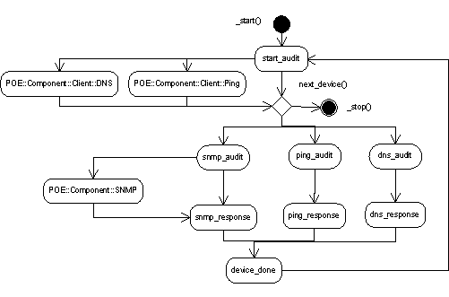

Perl net monitoring
Network monitoring team
Monitoring and reporting of
- Network devices
- Lines
- Relationships
Enviroment
- 331 customers
- 46 700 network devices
- 10 vendors (350 models)
- 150 infrastructure servers
Network monitoring team
Proprietary tools
- Monitoring(NNM)
- Reporting (Vitalnet, OVPI)
- Management (NCM)
Infrastructure DB
Custom tools
- Processes automatization, synchronization
- Monitoring, backup, statistics ... tools
Network infrastructure
What we use
PERL
- Net::DNS
- Net::SNMP
- Net::Ping
- POE
SNMP
Simple Network Management Protocol
- Components : manged devices, agents, NMS
- MIBs, OIDs
- Operations : GET, GETBULK, TRAP, SET
use Net::SNMP;
my $snmp = Net::SNMP->session(-hostname => $fqdn, -community => $secret);
# Get the uptime, if there's an answer then SNMP works
return 1 if $snmp->get_request(-varbindlist => [ '1.3.6.1.2.1.1.3.0' ]);
ICMP
Internet Control Message Protocol
use Net::Ping;
my $p = Net::Ping->new("icmp");
return 1 if $p->ping($host, $timeout);
DNS
Domain Name System
use Net::DNS;
my $dns = Net::DNS::Resolver->new;
my $query = $dns->search($fqdn);
foreach my $answer ($query->answer) {
next unless $answer->type eq "A";
return 1 if $ip eq $answer->address;
}
Parallelization
Why ?
- Test for 1 device : 5 second
- Test for 30 device : 2.5 minutes
- Test for 1000 devices : 1hour, 20 minutes
How ?
POE - Perl Object Environment
What is it?
- Multitasking and networking framework for Perl
- One real process
- State machine
Pieces
- States
- The kernel
- Sessions
POE
Advanced parts
- Drivers
- Filters
- Wheels
- Components
NetAudit POE component

And that's it...
Questions?